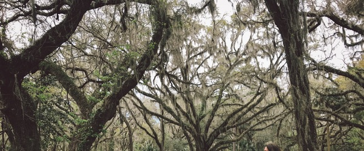
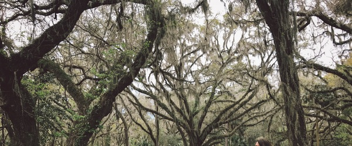

音乐人收藏
捞仔，音乐创作制作人 一头长发或许是艺术青年的象征。而在20多年前，这个象征则是一把吉他。那是上世纪80年代中期，“靡靡之音”刚刚滥觞，吉他这种“普罗”乐器在中国十分风靡，“简直就像一件家具，每个人都在墙上挂一把”。 捞仔的音乐道路就是从一把吉他开始的。那时，他还不叫捞仔，而是一个叫吴立群的16岁少年，高考成绩不佳，郁闷彷徨。偶然拿起时髦的吉他。没想到，自称“读书不是特长”的他，在六根琴弦里找到了未来的道路。天赋加上苦练，很快，他就把吉他玩溜了。…
 Read More
我说你是人间的四月天；
笑响点亮了四面风；
轻灵在春的光艳中交舞着变。
你是四月早天里的云烟，
黄昏吹着风的软，
星子在无意中闪，
细雨点洒在花前。
那轻，那娉婷，你是，鲜妍。
百花的冠冕你戴着，
你是天真，庄严，
你是夜夜的月圆。
雪化后那片鹅黄，
你像；新鲜
初放芽的绿，
你是；柔嫩喜悦
水光浮动着你梦期待中白莲。
你是一树一树的花开，
是燕在梁间呢喃，
——你是爱，是暖,是希望，
你是人间的四月天！ …捞仔，音乐创作制作人 一头长发或许是艺术青年的象征。而在20多年前，这个象征则是一把吉他。那是上世纪80年代中期，“靡靡之音”刚刚滥觞，吉他这种“普罗”乐器在中国十分风靡，“简直就像一件家具，每个人都在墙上挂一把”。 捞仔的音乐道路就是从一把吉他开始的。那时，他还不叫捞仔，而是一个叫吴立群的16岁少年，高考成绩不佳，郁闷彷徨。偶然拿起时髦的吉他。没想到，自称“读书不是特长”的他，在六根琴弦里找到了未来的道路。天赋加上苦练，很快，他就把吉他玩溜了。…
 Read More